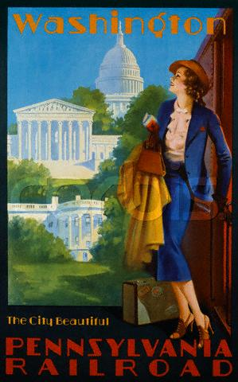

Feb. 4th - Feb. 7th -- Washington, DC & Charlottesville VA
We stop in D.C. on our way south for a little more fun with Eileen and
pals. Eileen, Christian, Fritz and Myra don't disappoint--they're
an instant party and it's great to see them again. For two successive
nights we uphold the
tradition of being the table that's laughing more than any other at two
different joints: one beefy, one
Indian--both tasty. There was a good bit of primary chat, with Fritz
understandably farklempt over Dean's demise. The conversation veered
dangerously into Weekly World News territory, what with the demise of
the poor, ill-fated
two-headed
baby.
So here's one to make us feel ancient: it WAS 40 years ago today that
the Beatles first played on The
Ed Sullivan Show. Sobered, we decide to drop in on The
Smithsonian's photo
exhibit of
the fab four's first U.S. visit, just opened at the National Museum of
American History. Braving torrential rain in a cab so steamy we're not
sure how the driver is seeing out the windshield, we meet up with
Eileen, who has bought Beatle
boots for the occasion. Eric--ever the
stickler for detail--questions the authenticity of Eileen's new
footwear. He's wrong. Careful examination of the photos proves that
Eileen may indeed be the secret fifth Beatle.
Pop culture divas, even as little kids, Eileen and I remembered
watching
Sullivan that night--both of us in our jammies; she in Boston, me in
NY. It was such a big deal that I even remember my jammies: stretchy
red cotton jersey bottoms with a yellow top. Eric was more of a
Wonderful World of Color kid--though at his house, and ours, it was the
maddening Wonderful World of Black and White. (He doesn't recall if he
watched wearing sleepwear that night.) The Washington Post ran a
clever feature about the others who appeared on Sullivan that
night,
folks who thought their time on the glowing tube was going to be a
career breakthrough, but who wound up roadkill on the the entertainment
highway.
Back at the Smithsonian, studying the photos, there's all the obvious
stuff. John, Paul, George and Ringo were so young and so very cute. And
tiny--they're unbelievably thin. It's bittersweet looking at all of
them on the cusp of the ride they're about to take, with two of them
now gone. I try to think how one could possibly explain that phenom to
a kid today. They were such a huge deal that there just aren't
any analogies that come close. Historians make heavy weather out
of the
context of the times: The Beatles took the country by storm just 10
weeks after JFK was assasinated.
It's safe to say there was still plenty of pent-up emotion. But does
that explain all those hysterical young women and a country poised to
go mad for them? Not entirely. They were burning up Great Britian and
Germany when they first came to the U.S. It was their time.
The photos jog memories: Eileen and I both recall Ed Sullivan saying
what fine young men they were. And we remember him reading a telegram
Elvis sent to congratulate them on their success. We didn't
recall that Richard Rodgers also cabled Sullivan to say what a fan he
was. (Even though we were little kids, we knew Elvis. Richard Rogers?
Probably not.) It was deeply strange that Sullivan was the one to fire
the
opening shots in this particular revolution: he was about as hip as
Richard Nixon. But more power to him-- travelling through London he
spotted a mob scene at
Heathrow some months before. He
assumed that kind of a turnout meant the Queen. But when he asked, he
found out it was The Beatles. As soon as he got back to NY he started
negotiations to get them onto his show.
Thank heavens he did. The boys look like they're just enjoying
themselves enormously--even George, whose strep throat and 104 degree
fever had him missing the dress rehearsals for
the show.(His sister, a nurse, was hanging with him at the hotel,
pumping him
full of antibiotics.) The group's first trip included performances in
Washington, D.C., and then more Sullivan shows, broadcast remotely from
Miami. A blizzard made flying a bad idea, so all boarded a train for
Miami. In the photos of that trip you can see the clowning seeds of
"Hard Day's Night," complete
with Ringo supine on the luggage rack, above the seats. We find The
Beatles: The First US Visit, Albert
Maysles' documentary of that first trip in the Smithsonian's Gift Shop
and watch it with Eileen later in the weekend. It was a perfect
adjunct, well worth seeing. Mayles
was a sensitive documentarians it's a solid, verite film. To him,
it was just a job. He had no idea they were filming such a
significant slice of music history.
Having met the Beatles, we wander down a couple of floors to drop in on
Julia Child's kitchen,
which has been moved from her old home in
Cambridge and lovingly reassembled in the American History Museum. I'm
awestruck and could probably have spent hours with it. Old videos of
Julia's early PBS show, The French Chef, are running in an endless
loop. Unlike
the Beatles, she's not tiny and she's not thin. But she is cute. I used
to love
watching
her when I was a kid. My grandparents turned me on to her, which seems
fitting. She was so new to TV, and she was a cook--not a performer.
She'd sometimes absentmindedly lick a spoon and stick it back in a
drawer. I thought that was hilarious and would sit, riveted, waiting
for moments like that. (Yes kids, this is what children found funny
before Spongebob
Squarepants.) I watch the loop, seeing Julia age before my eyes, her
six-foot frame bending with the years until she assumes the posture of
a
manatee. In the most recent footage, she's cooking with Jacques Pepin
and her voice has taken on a quality depressingly like Popeye's.
Sometimes, it's best just to remember.
Much as we adore Eileen and company, it's time to move on. We
push off for Charlottesville, our next stop on the long, southern route
home.
I've long wanted to visit Jefferson's joint and we point the car for
Monticello. Eric had been
there long ago, but his only memory of it was
of Jefferson's
clock. Understandable that it made an impression, it was
clever device. Monticello is filled with touches like that. Jefferson
was an inventor and a big early adopter of the
technology of the time. His office
contained an early copying
machine for making dual copies of correspondence. The house is
charming in lots of ways, but much of
its appeal comes from how smartly things were done, from the
orientation of the building (with outdoor privies and the smokehouse
upwind of the house) to dumbwaiters to innovations in heating and
cooling. Jefferson
loved things French and adopted a multicourse entertaining style, with
a meal stretching over many hours.
Standing in front of his table, set for a full day's dining, drives
home how difficult it was to bring off such a feat. It was a long way
from his beginnings on the property. When Jefferson married, he brought
his new bride
to a one-room cottage that he had built before the main house went up.
I hadn't appreciated just how small that cottage was. It was beautiful,
but it was rather like a large closet with a fireplace. That they lived
there--and that she even had their first child there--is pretty
amazing.
As impressed as one is by Jefferson's ingenuity, and certainly by his
political vision, it's impossible to make peace with his professed
beliefs about the evils of slavery and the hypocrisy of the life he
lived,
which depended
on it. His own son, a child by his slave Sally Hemmings, was also
enslaved,
but was given the privilege of
serving in the main house. When Jefferson died, he did not set his
slaves free,
but rather, used them to help pay the debt he had accumulated in his
life.
A pretty house, but not a pretty picture.
STATS
Slept at:
Ritz Georgetown
Keswick Hall
Chowed down at:
Martin's Tavern
Heritage India
McCormick
& Schmick
Watched:
The
Beatles: The First US Visit